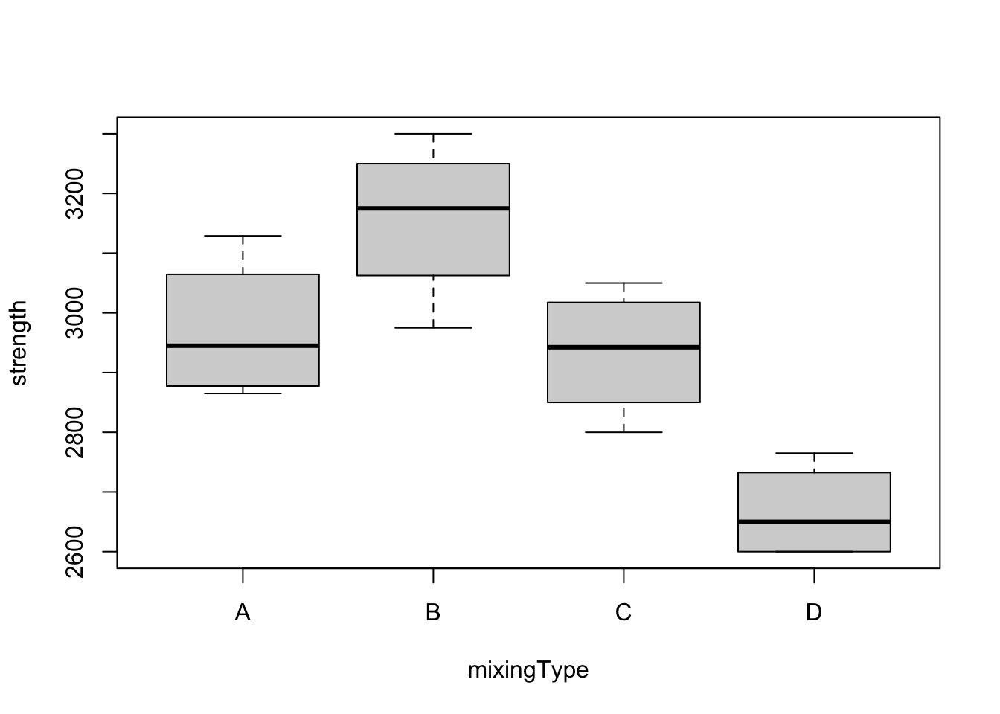
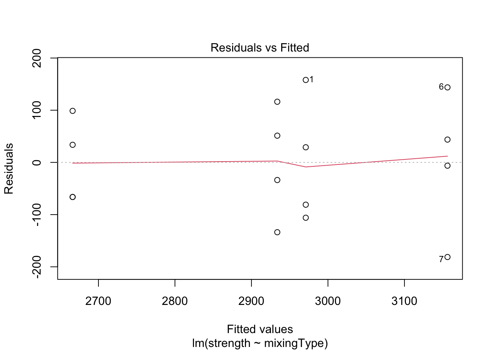
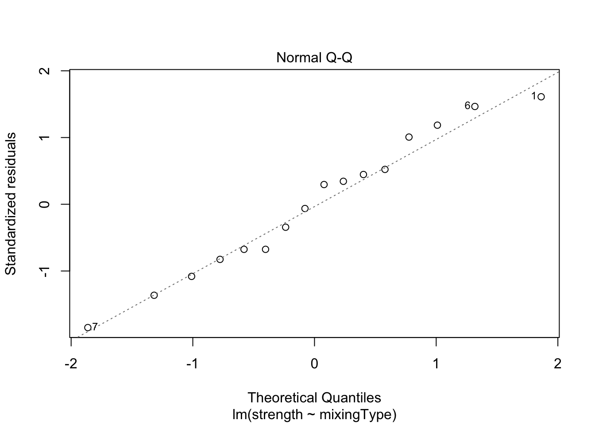
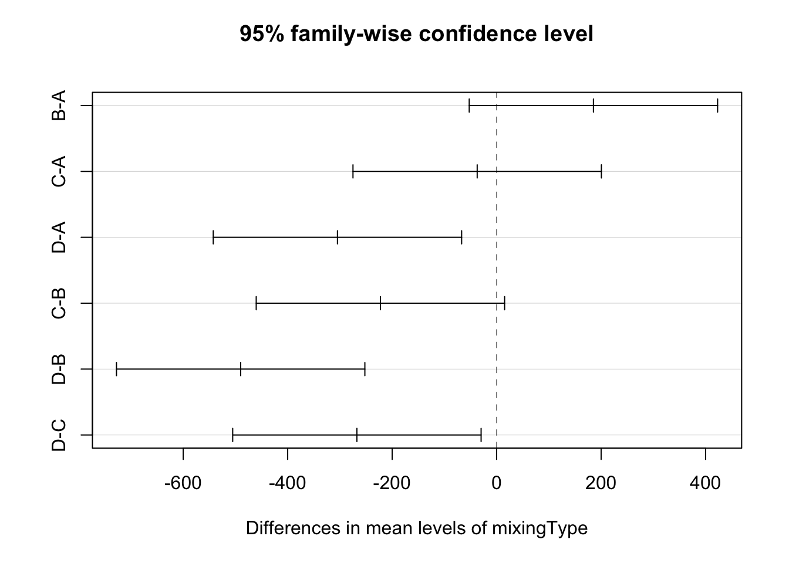

In this case study, we will fit a One-way ANOVA model, meaning that our dependent variable will be written as a function of one categorical regressor. The objective here will be checking whether the treatment has an effect on the response variable. To do this, we will fit the model, check the assumptions, interpret it, and predict new values based on this fitted model.
For this problem, we will analyse data about the the tensile strength of Portland cement. Four different mixing techniques were tested and the resulting tensile strength was measured. You can download the .csv file here.
This data set contains following the variables:
mixingType (multi-valued discrete)strength (continuous)In order to explore the data set and perform initial analyses, we have to read it (with R) first. Provided that the .csv file is saved within the datasets/ folder, one can read the file in the following way.
col.names <- c('mixingType', 'strength')
ts <- read.csv(file = 'datasets/tensile_strength.csv', header = FALSE, sep = ',', col.names = col.names)
head(ts, 5)## mixingType strength
## 1 A 3129
## 2 A 3000
## 3 A 2865
## 4 A 2890
## 5 B 3200Now, let’s see a summary of our data.
summary(ts)## mixingType strength
## Length:16 Min. :2600
## Class :character 1st Qu.:2791
## Mode :character Median :2938
## Mean :2932
## 3rd Qu.:3070
## Max. :3300As one can see from the above table, the multi-valued discrete attribute is being interpreted as character; however, we should set is as factor. For changing it, we can do the following
ts$mixingType <- as.factor(ts$mixingType)
summary(ts)## mixingType strength
## A:4 Min. :2600
## B:4 1st Qu.:2791
## C:4 Median :2938
## D:4 Mean :2932
## 3rd Qu.:3070
## Max. :3300As a way to first start exploring the data, we can do a boxplots for strength as a function of the mixingType, so that we can observe whether the mixing type has an effect on the strength.
boxplot(strength ~ mixingType, data = ts)
First thing to observe is the fact that the boxes have (approximately) the same height, which supports the assumption of equal variances. Also, especially when one focus on groups B and D, one can see a clear difference between treatments, which may suggest that the mixing type has effect on the strength. However, we still have to fit a model and perform the appropriate analyses before concluding anything.
So let’s start by fitting a linear model for strength as a function of mixingType. We can do this using the lm() function, from base R.
model <- lm(formula = strength ~ mixingType, data = ts)However, in this case, we are interested in the ANOVA table. To get it, we can use the anova() function for a object returned from the lm() method, as model. Alternatively, we could have used the aov(formula = strength ~ mixingType, data = ts) command.
anova(model)## Analysis of Variance Table
##
## Response: strength
## Df Sum Sq Mean Sq F value Pr(>F)
## mixingType 3 489740 163247 12.728 0.0004887 ***
## Residuals 12 153908 12826
## ---
## Signif. codes: 0 '***' 0.001 '**' 0.01 '*' 0.05 '.' 0.1 ' ' 1From the above table, we can see that the p-value (= 0.0004887) is very small, so we reject the null hypothesis that says that all means are the same. Which is the same as saying that there is evidence from the data that the mixing type has an effect on the strength (if we have a valid model; we will check it).
Additionally, we can also compute the estimated means for the for the four mixing types, namely \(\hat{\mu} + \hat{\tau}_i\), \(\forall i\). To do this, we can use the model.tables() function.
# Average values
modAOV <- aov(formula = strength ~ mixingType, data = ts)
model.tables(modAOV, 'means')## Tables of means
## Grand mean
##
## 2931.812
##
## mixingType
## mixingType
## A B C D
## 2971.0 3156.2 2933.8 2666.2# Effects
model.tables(modAOV)## Tables of effects
##
## mixingType
## mixingType
## A B C D
## 39.19 224.44 1.94 -265.56Notice that, by analyzing summary(model) this is the same as
summary(model)##
## Call:
## lm(formula = strength ~ mixingType, data = ts)
##
## Residuals:
## Min 1Q Median 3Q Max
## -181.25 -69.94 11.38 63.12 158.00
##
## Coefficients:
## Estimate Std. Error t value Pr(>|t|)
## (Intercept) 2971.00 56.63 52.468 1.51e-15 ***
## mixingTypeB 185.25 80.08 2.313 0.0392 *
## mixingTypeC -37.25 80.08 -0.465 0.6501
## mixingTypeD -304.75 80.08 -3.806 0.0025 **
## ---
## Signif. codes: 0 '***' 0.001 '**' 0.01 '*' 0.05 '.' 0.1 ' ' 1
##
## Residual standard error: 113.3 on 12 degrees of freedom
## Multiple R-squared: 0.7609, Adjusted R-squared: 0.7011
## F-statistic: 12.73 on 3 and 12 DF, p-value: 0.0004887data.frame(Treatments = c('mu+tau_1', 'mu+tau_2', 'mu+tau_3', 'mu+tau_4'),
Average = model$coefficients[1] + c(0, model$coefficients[2:4]),
row.names = c('mixtechA', names(model$coefficients)[2:4]))## Treatments Average
## mixtechA mu+tau_1 2971.00
## mixingTypeB mu+tau_2 3156.25
## mixingTypeC mu+tau_3 2933.75
## mixingTypeD mu+tau_4 2666.25data.frame(Treatments = c('tau_1', 'tau_2', 'tau_3', 'tau_4'),
Effect = model$coefficients[1] + c(0, model$coefficients[2:4]) - mean(ts$strength),
row.names = c('mixtechA', names(model$coefficients)[2:4])) # Subtracting the mean## Treatments Effect
## mixtechA tau_1 39.1875
## mixingTypeB tau_2 224.4375
## mixingTypeC tau_3 1.9375
## mixingTypeD tau_4 -265.5625Now, we will do one the most important steps, namely “residual analysis”. It is crucial to verify whether the model assumptions hold. In this case, we will test for equal variance and normality for the residuals. We can do this graphically as follows
plot(model, which = c(1, 2))
Both plots look okay, since points are equally dispersed around \(y = 0\) for the “Residuals vs. Fitted” graph, and the values lie along the line (meaning the data distribution has the same shape as the theoretical distribution we have supposed; i.e., Normal) for the “Normal Q-Q” graph. However, to confirm this visual interpretation of the plots, we can perform a test for both assumption. To do this, we will use the Score Test, available in the car package through the leveneTest() function. Also, to check for the normality of the residuals, we will use the Shapiro-Wilk test (shapiro.test()).
library('car')## Loading required package: carDataleveneTest(model)## Levene's Test for Homogeneity of Variance (center = median)
## Df F value Pr(>F)
## group 3 0.1833 0.9057
## 12shapiro.test(resid(model))##
## Shapiro-Wilk normality test
##
## data: resid(model)
## W = 0.97046, p-value = 0.846Since the p-values are large for both tests, we fail to reject the hypothesis of equal variance and normality, meaning that assumptions hold.
Finally, we can also do a pairwise comparison among the treatments. In this case, we will use the Tukey’s Honest Significant Difference method. For a 95% confidence level, and using the TukeyHSD() function,
(modTuk <- TukeyHSD(modAOV))## Tukey multiple comparisons of means
## 95% family-wise confidence level
##
## Fit: aov(formula = strength ~ mixingType, data = ts)
##
## $mixingType
## diff lwr upr p adj
## B-A 185.25 -52.50029 423.00029 0.1493561
## C-A -37.25 -275.00029 200.50029 0.9652776
## D-A -304.75 -542.50029 -66.99971 0.0115923
## C-B -222.50 -460.25029 15.25029 0.0693027
## D-B -490.00 -727.75029 -252.24971 0.0002622
## D-C -267.50 -505.25029 -29.74971 0.0261838plot(modTuk)
As we can see from the table and the plot, we fail to reject that the means for the pairs B-A, C-A, and C-B are different, but we reject the null hypothesis for the pairs D-A, D-B, and D-C. Meaning that mixing type D is different from the rest, but the others cannot be distinguished.
So the question is, if you had to choose a mixing type, which one would you pick?
As expected, the predicted values for each group will be equal to the estimated means (as computed above). To see this, we can use the predict() function.
newdata <- data.frame(mixingType = factor(c('A', 'B', 'C', 'D')))
predict(model, newdata = newdata)## 1 2 3 4
## 2971.00 3156.25 2933.75 2666.25